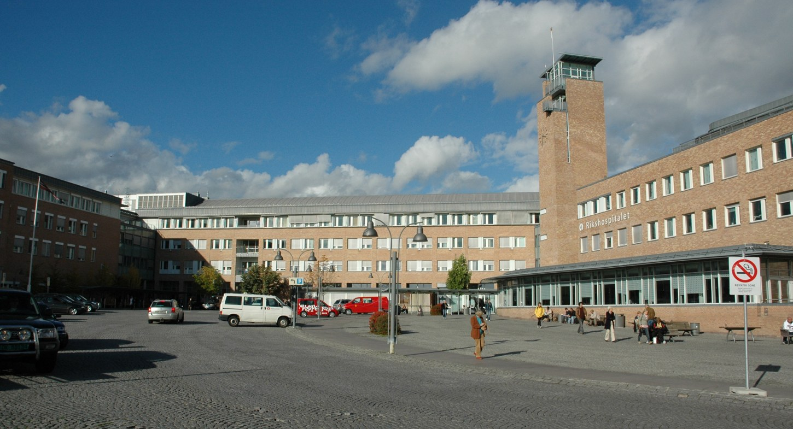
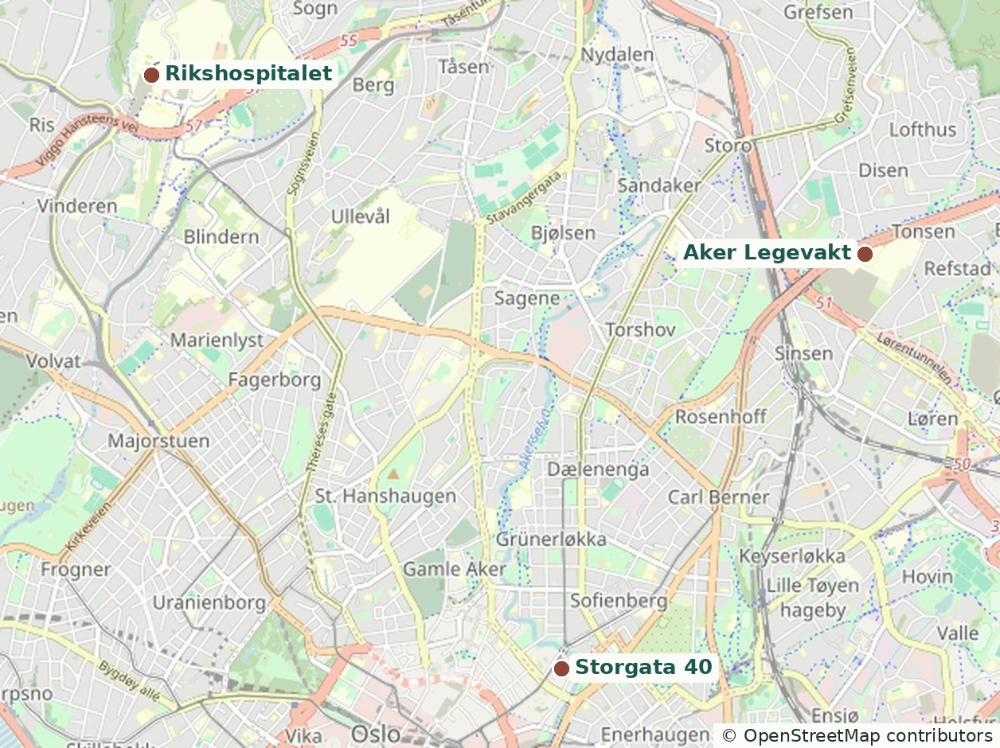

挪威影集《急症最前線》以奧斯陸的急症照護為背景。主角 Sofia Karimi 原任職於奧斯陸大學醫院的 Rikshospitalet 院區；劇中急症中心的場景則在 Storgata 40 舊址拍攝。現實中的中心已在 2023 年遷至 Aker 醫院園區，由市政府與奧斯陸大學醫院分工提供服務。[1][2][4]
劇情摘要
Sofia Karimi 是 Rikshospitalet 的外科醫師。一次下班後的緊急救人事件，使她在一間人力吃緊的急症中心違反工作程序。為了保住職業前途，她到這間中心工作，進入一個原有班底早已在應付人力和候診壓力的地方。劇情的重心也轉到這群人身上：安排人手與流程的護理主管 Renate，以及面對預算與外部壓力的中心主管 Stig。全季共七集，於 2026 年 11 月 26 日上架；本文只交代故事的出發點，官方簡介沒有標出故事的確切年份。[1][5]
主要人物與他們的工作
安德斯・普拉圖｜Anders Platou
飾演者：Thorbjørn Harr · 職務：急症中心主任醫師
蘇菲亞加入時，安德斯已是中心的資深醫師。前段一名年輕實習醫師直率地向他提問；他的工作也使他持續面對中心裡的病人、同事與流程壓力。[14]
人物劇照：使用者提供。
蕾娜特｜Renate
飾演者：Silje Storstein · 職務：護理師兼值班主管
蕾娜特接待病人並協調當班工作。故事前段，她著手改善急症專線的流程，希望縮短病人在電話上的等待時間；這條線也把劇情帶往急症服務實際面臨的分流問題。[5]
史提格・索爾旺｜Stig Solvang
飾演者：Jan Gunnar Røise · 職務：急症中心主管
史提格負責中心的營運、人力與預算。在資源壓力下，他得設法讓病人與員工的日常運作維持下去，也須向媒體說明人力與急症政策。[15]
人物劇照：使用者提供。
李奧｜Leo
飾演者：Nader Khademi · 職務：急症中心第一線醫師
故事前半季，李奧遇到一個超出日常職責的難題，必須判斷自己該介入到什麼程度。本文不交代其後發展。[14]
Rikshospitalet 是 Sofia 的原職所在。Storgata 40 是急症中心的舊址和劇組取景地。Aker 則是現實中的中心在 2023 年搬去的地方。
在 Google 地圖上查看三個地址
奧斯陸的三個地點
Rikshospitalet 位於奧斯陸西北部的 Gaustad；市立急症中心原設於市中心的 Storgata 40；現實中的急症中心已遷至舊址東北方、Sinsen 一帶的 Aker 醫院園區。
Gaustad｜Rikshospitalet
Sognsvannsveien 20, 0372 Oslo · Google 地圖
Rikshospitalet 是奧斯陸大學醫院的院區之一，有自己的院內急診接收部門；院方公布，該部門自 2025 年 2 月起位於 E3 棟。擴建中的 Nye Rikshospitalet 預計 2031 年落成。這裡是 Sofia 在劇中的原職地點；已查到的取景報導確認了舊急症中心的拍攝地，對這座院區的鏡頭則未提供逐場取景資料。[3][6]

Rikshospitalet 院區，攝於 2005 年。Kjetil Lenes 攝，Wikimedia Commons（公有領域）。

市中心｜Storgata 40
Storgata 40, Oslo · Google 地圖
急症服務於 1900 年在這處院址開辦，直到 2023 年 11 月搬遷。兩位編劇自 2018 年開始發展本劇，靈感來自舊中心；搬遷後，劇組回到舊址拍攝。製作人提到，幾乎每個房間都曾重新粉刷、翻修或改造，劇中的走廊與候診空間以舊址為基礎，部分室內陳設經劇組改造。[2][7]
Sinsen｜Aker 的 Oslo Storbylegevakt
Trondheimsveien 233, Oslo · Google 地圖
新中心於 2023 年 11 月 22 日啟用，位於 Aker 醫院園區的 40 棟。它延續舊址的急症服務，也把不同單位的服務集中在一道入口。市政府提供新址外觀與室內照片；另可查看舊址拍攝現場照片。[4][8][9]
同樣叫「急診」，入口怎麼分
在挪威，fastlege 是平常負責看診的家庭醫師。家庭醫師無法看診、情況又不能等時，地方政府設置的 legevakt 提供全天候急症服務；它可以在電話上判斷急迫程度、給建議，或安排病人到場。危及生命的緊急狀況則走 113 緊急救護系統。這個分工解釋了為什麼在劇裡，外科醫師來到急症中心後，得重新適應由電話、報到、分流與各種急迫程度病人組成的工作。[10][11]
地方急症中心（legevakt） 病情不能等、家庭醫師又無法看診，通用電話為 116 117。
緊急救護系統 危及生命時打 113。
Aker 的分工又更具體：市府經營一般急症服務，也提供性侵害支援及心理社會服務；奧斯陸大學醫院負責外傷急症與精神科急症。從病人的角度，入口是一道門；進門後，一般急症與外傷使用不同的取號系統。從劇裡看到的「一個急診」，到了現實裡，是兩個主管機構共同運作的服務。[4][8]
Aker 啟用後的電話分流與等待情況
搬家後，市政府發現一般急症部門的病人流動仍不順暢。新址的候診區原以病人能快速流動為前提設計，假期人一多，等候空間便很擠。2025 年開始檢討時，市府希望更多人先打電話，再依評估決定要不要到場，部分病人也可以先在家等安排時段。院方的外傷急症服務則可直接到場抽號。這套電話分流做法的前提是電話有人接：挪威的急救醫療規則要求急症中心電話系統在平常應能於兩分鐘內接聽 80% 的來電。[9][11][12]
17% 2025 年 12 月，奧斯陸此中心兩分鐘內接聽的來電比例。
80% 法規對平常兩分鐘內接聽比例的要求；同一個 12 月，中心有 80% 的來電是在十分鐘內接聽。
市府說，2025 年底遇到流感提早達到高峰，來電量從 10 月日均約 845 通升到 12 月約 1,050 通。市政府於 2026 年 2 月宣布一次性增撥 2,000 萬挪威克朗，希望改善電話回應、病人流動，也讓人力更能隨需求調整。到 2026 年 11 月，挪威媒體仍報導接聽延遲，並引述年初至當時約五萬通來電未獲接聽。這些都是電話端的數字，範圍也限於奧斯陸的這項服務。[9][13]
劇中，Renate 著手縮短急症專線的等待時間。現實中，奧斯陸推動先電話評估，讓部分病人可在家等候安排的到場時段，以減輕候診區壓力。電話接聽速度因此影響病人何時能獲得初步評估，也成為市府追蹤的服務指標。
三地在奧斯陸的位置

English Conversation Guide
For readers discussing Always on Call across cultures.
A 45-second introduction
Words you can use
- GP (general practitioner)
- 家庭醫師、全科醫師。挪威的 fastlege 是平時固定看診的家庭醫師。
- out-of-hours medical service
- 家庭醫師無法看診時的急症服務。介紹挪威制度時可保留 legevakt，再用這個英文詞解釋。
- emergency department (ED)
- 醫院急診部門；日常聊天也會聽到美式的 ER 或英式的 A&E。
- telephone triage
- 電話檢傷分流。A nurse assesses how urgently the caller needs care.
- response time / waiting time
- Call response time 是等電話接通的時間；到場後等看診可說 the wait to see a clinician。
- filming location / former site
- 拍攝地點／舊址。Set in Oslo 說故事背景；filmed at Storgata 40 說實際取景。
Talking about the show
I’ve started watching Always on Call, that Norwegian series set in Oslo. It got me wondering: if you needed to see a doctor on a Sunday night, where would you go?
Where I live in Taiwan, I’d probably check which clinics are still open. Do people in Oslo usually call first? When you get through, can they book you a time, or do they just tell you where to go?
如果聊到先打電話是否真的改善了看診經驗，可以順著問：
So if the waiting room is less crowded, are people actually getting seen sooner, or are they just spending more time on hold?
on hold：電話接通前在線上等候。
Discuss the healthcare system and the city
With someone who lives in Norway What would you do if you needed medical help on a Sunday evening? Would your answer change if you lived in a small town? Follow up with “What tends to happen in practice?” Then ask: “Which parts of the clinic felt familiar to you?”
With classmates or colleagues from different countries Compare one situation: a person needs medical attention that evening, their usual doctor is unavailable, and it does not appear life-threatening. Where would they start in your city? How would someone who had just moved there find out?
Consider Oslo's call-first policy. In December 2025, 17% of calls were answered within two minutes; the national rule calls for 80% under normal conditions. If a call-first system reduced waiting inside the clinic, what else would you measure before deciding it had improved access? 可比較接通前掛斷比例、從首次求助到初步評估的時間，以及不同語言使用者是否能取得服務。
With an Oslo resident or local guide 從 Storgata 40 在地圖上定位，再沿 Akerselva 河畔步行。I'm planning a short walk along the Akerselva. Which stretch would you recommend to someone interested in how Oslo has changed? A series I watched was filmed near here. What used to be in this neighbourhood?
A short exchange
You I was reading about Oslo's out-of-hours clinics. Where I live in Taiwan, I usually think first about which clinic is still open. What would you do here?
Local resident It depends on how urgent it is and whether I can reach my GP.
You That makes sense. When people here say legevakt, do they usually mean the clinic itself, or the service you call first?
Why can a welfare state still have long waits?
Norway's largely publicly financed system provides universal coverage, and municipalities organise primary and out-of-hours care. That creates a route to care and financial protection. Timely care also needs staff to answer calls, assess urgency and arrange visits when people need them. A well-funded system can have enough resources overall and still struggle to match staffing and clinic capacity to a local surge.
In late 2025, an early flu peak coincided with more calls and longer conversations in Oslo. A call-first policy can spare some patients a long wait on site when staff can assess them promptly. When callers struggle to get through, part of the queue can move from the waiting room to the phone. Can a country protect people well against medical bills and still struggle to get patients assessed on time? What would that look like where you live?
Six health systems, one Sunday evening
Same situation: It is Sunday evening. An adult resident needs medical attention before morning. Their usual clinic is closed, and the situation does not appear to be life-threatening. Who can help them decide where to go? What might they pay, and who would provide follow-up?
| Country | How care is financed | After-hours access in practice |
|---|---|---|
| Norway | Universal, mainly publicly financed coverage; municipalities organise primary care. | 116 117 connects callers to a local legevakt. Oslo combines municipal general urgent care and university-hospital services at Aker. |
| Taiwan | One public insurer administers National Health Insurance; patients can generally go directly to hospital outpatient departments, often with higher copayment than with referral. | Options include open clinics and hospital emergency departments. A 2025 pilot funds designated Sunday and public-holiday urgent care centres. |
| United States | Employer plans coexist with Medicare, Medicaid and directly purchased coverage; some residents remain uninsured. | A clinician's after-hours service or local urgent care may be available. EMTALA protects screening and stabilisation for emergency conditions, but patients may still be billed. |
| Germany | Compulsory coverage is mainly through statutory sickness funds, with private cover for some residents. | 116 117 offers access to out-of-hours doctors; the English information page notes the phone service is in German. |
| Austria | Statutory social health insurance covers almost all residents. | 1450 provides telephone health advice; 141 reaches regional out-of-hours doctors. |
| Japan | Universal public insurance is organised through multiple schemes with a national fee schedule. | #7119 provides emergency advice in participating areas, including Tokyo. |
比較時可依序問：誰有保險？誰給第一個專業判斷？在哪裡等、要付什麼費用？各國夜間服務依地區與時段而異。
What the comparison brings out
What does a generous welfare state provide? Coverage and the ability to take time off are different parts of access. In Norway, eligible employees generally receive sickness benefits from employers for the first 16 days, after which NAV can take over. The United States has no general federal guarantee of paid sick leave.
Who helps patients choose the next step? Oslo's call-first approach places a professional assessment before many arrivals. Taiwan can use copayments to encourage referrals and has added holiday urgent-care sites; Japan allows broad provider choice while charging an extra first-visit fee at some large hospitals.
Does a shorter queue mean better access? Compare time from the first attempt to seek help to a completed clinical assessment. Also track abandoned calls, repeat attempts, and whether patients obtained the care they were directed to. What if the average wait goes down, but patients who need an interpreter or live far away have a harder time getting assessed?
Which part of a policy travels well? A phone number is easy to publicise. What it achieves depends on who answers, what they can arrange and whether a suitable service is open nearby. If Taiwan wanted to add phone triage to its holiday centres, should the line give advice, book a visit, or do both? Who would staff it?
Key terms｜專業詞彙
- coverage
- 保障範圍；本文指一個人是否有制度上的醫療保障，與能否及時取得服務是兩回事。
- sickness benefits / paid sick leave
- 傷病給付／有薪病假。前者通常指社會保險或雇主在病假期間提供的收入替代；後者著重請假時是否仍領薪。
- call-first approach
- 先電話分流；要求或鼓勵病人在到場前先打電話，接受初步評估與指引。
- professional / clinical assessment
- 專業／臨床初步評估；由醫護人員判斷病情急迫性與下一步照護安排。
- copayment
- 部分負擔；病人在就醫時自付的一部分費用，可用來影響就醫途徑。
- referral
- 轉診；由基層醫師或其他醫療人員安排病人轉往下一層級或專科服務。
- first-visit fee
- 初診加收費；部分大型醫院對未經轉診直接初次就醫者收取的額外費用。
- abandoned calls / repeat attempts
- 未接通即掛斷的來電／重複嘗試來電；兩者可用來觀察電話系統是否把等待轉移到病人端。
- interpreter
- 口譯人員；比較服務可近性時，也要考量不同語言使用者是否能完成初步評估。
- phone triage
- 電話檢傷分流；在電話中判斷急迫程度，並給予建議、安排看診或轉介。
An example discussion
Mei, Taiwan The series made me think about our holiday urgent care centres. Adding a place to go could help, but how would patients know which cases those centres can handle?
Ida, Norway In Oslo, the first step may be a phone call. I would ask whether people who wait at home are getting assessed sooner, and whether anyone gives up before getting through.
Alex, United States I'd add another question. How much would I expect to pay? A hospital's obligation to screen and stabilise someone in an emergency and the bill that person receives are separate issues.
Mei Then let's compare the whole experience: how people get advice, how long they wait for an assessment, what they are charged, and whether they can take time off to get care.
Useful phrases universal coverage 全民或普及醫療保障；single payer 單一支付者；patient cost-sharing 病人部分負擔；statutory health insurance 法定健康保險；out-of-pocket cost 自付費用；paid sick leave 有薪病假。
When you say care is accessible, do you mean affordable, nearby, or available when you need it?
How much of that difference comes from insurance, and how much comes from how care is organised locally?
Could we compare the same patient, on the same kind of evening, in all six systems?
資料與影像
- Netflix 台灣節目頁；挪威版分集簡介。
- NTB／Dagens Medisin，2026-11-24。
- 奧斯陸大學醫院：Rikshospitalet 急診。
- 奧斯陸市政府：Aker 新中心開幕，2023-11-22。
- Sykepleien：Renate 與電話處理情節，2026-11-26。
- 奧斯陸大學醫院 2040 發展計畫。
- 奧斯陸外傷急症服務的歷史。
- 奧斯陸大學醫院：Aker 園區。
- 奧斯陸市政府：增撥經費與電話資料，2026-02-05。
- Helsenorge：全天候地方急症服務。
- Lovdata：《急救醫療規則》第 13 條；挪威衛生署接聽指標。
- 奧斯陸市政府：改善急症流程，2025-01-29。
- NTB／Dagsavisen：電話應答追蹤，2026-11-11。
- 挪威 ELLE：劇照、演員與角色對照，2026-11-26；團體照圖說署名 Einar Aslaksen／Netflix。
- VG：Jan Gunnar Røise 談《Legevakta》中的主管角色，2026-11-25。
- 六國比較資料：Norway、Taiwan NHIA、U.S. Census、Germany、Austria、Japan；另見 NAV sickness benefit、U.S. Department of Labor paid leave。